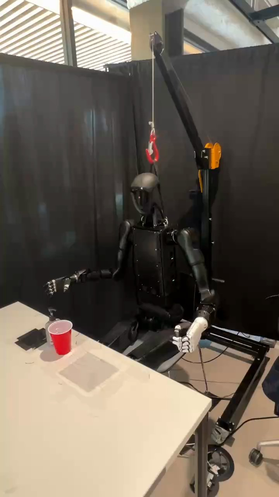

Humanoid Everyday · articulated-2__compress_liquid_hand_soap
Compress liquid hand soap

Visual review action_review.json
{
"prompt_protocol": "humanoid_action_v1",
"prompt_provenance": "visually_authored_from_video_and_initial_frame",
"reviewed_contact_sheets": [
"sheet_001.jpg",
"sheet_002.jpg",
"sheet_003.jpg",
"sheet_004.jpg"
],
"inspected_frame_stride": 2,
"inspected_sampled_frame_count": 201,
"initial_scene": "The humanoid faces the table and camera obliquely, with its dark right hand at image left and its white left hand at image right. A translucent pump soap bottle stands behind and slightly image-left of a red cup. Both objects are on the tabletop; neither hand initially holds either object.",
"observed_sequence": [
{
"source_frame_interval": [
0,
40
],
"action": "The right arm is extended toward the table; both hands are clear of the objects. The left arm remains beside the torso.",
"confidence": "high"
},
{
"source_frame_interval": [
41,
78
],
"action": "The right elbow bends and raises the open dark hand, with fingers spread; the hand turns toward a palm-down approach.",
"confidence": "high"
},
{
"source_frame_interval": [
79,
119
],
"action": "The right arm extends toward the soap bottle, lowering the open hand over the pump behind the stationary red cup. Native frame 112 shows a small gap; frame 120 shows fingers contacting the pump.",
"confidence": "high"
},
{
"source_frame_interval": [
120,
140
],
"action": "The right hand contacts the pump and pushes down; the fingers settle over its head while the soap bottle remains upright.",
"confidence": "high for downward contact; moderate for exact pump travel"
},
{
"source_frame_interval": [
141,
278
],
"action": "The right hand remains low on the pump with small finger and wrist adjustments. No distinct additional large pumping cycle or object lifting is resolved. The left hand does not stabilize or receive either object.",
"confidence": "high for maintained contact; moderate for small pump motion"
},
{
"source_frame_interval": [
279,
322
],
"action": "The right hand lifts clear of the pump, reopening the fingers while withdrawing upward and away. The pump head becomes visible again; the bottle and red cup remain in place.",
"confidence": "high"
},
{
"source_frame_interval": [
323,
400
],
"action": "The right elbow bends to retract the arm, returning the open hand beside the torso. Both hands finish clear of the dispenser and cup.",
"confidence": "high"
}
],
"arm_hand_roles": {
"right": "The dark articulated hand approaches palm-down, contacts and presses the soap pump, then releases contact and retracts. It does not pick up the dispenser or cup.",
"left": "The white articulated hand remains near the torso at image right and does not contact, support, transfer or stabilize the objects.",
"coordination": "Single-hand manipulation; no bimanual coordination or person interaction is visible."
},
"anatomical_side_evidence": {
"convention": "The robot faces the table/camera with its front torso panel and face visible. Tracing each shoulder attachment to the upper arm identifies the dark hand on image left as the robot-relative right hand and the white hand on image right as the robot-relative left hand. The active arm does not cross the torso.",
"evidence_frame_indices": [
0,
50,
100,
128,
400
],
"confidence": "high",
"uncertainty": null
},
"evidence_frame_indices": [
0,
50,
100,
112,
120,
128,
134,
150,
164,
180,
194,
220,
240,
260,
274,
282,
290,
320,
350,
400
],
"initial_png_inspected_at_native_resolution": true,
"visual_inspection_coverage": {
"source_frame_interval": [
0,
400
],
"sampled_indices": "Every even source frame from 0 through 400 inclusive",
"contact_sheet_count": 4,
"native_dimensions": [
720,
1280
],
"native_detail_count": 20
},
"grasp_and_release_evidence": "No object grasp occurs. The open right hand presses the pump; release of pump contact is visible by native frame 290 and complete arm withdrawal by frame 400.",
"outcome": "The pump-press and hand-withdrawal sequence completes. The cup and dispenser remain upright and stationary; successful liquid delivery is not visually established.",
"selected_execution_status": "uncertain",
"selected_execution_status_reason": "The visible mechanical manipulation is complete, but the annotated liquid-dispensing outcome cannot be verified from the small, partially occluded spout and cup interior.",
"terminal_state": "At frame 400 the right arm is retracted with hand open, the left hand remains clear, and the pump dispenser and red cup are upright in their original tabletop positions.",
"uncertainties": [
"A liquid stream, liquid quantity and delivery into the cup are not resolved at native resolution; the cup and hand partly occlude the dispenser spout.",
"The exact depth of pump depression and any very small repeated strokes during sustained contact cannot be determined reliably."
],
"annotation_discrepancies": [
"The source describes proper liquid dispensing into a cup. The frames verify pump contact and withdrawal but do not visibly establish liquid entering the cup; the prompt therefore describes only the observed manipulation and end state."
],
"video_id": "articulated-2",
"dataset": "Humanoid_Everyday",
"dedicated_review_agent": "review_he_articulated_2",
"review_source_video": "Humanoid_Everyday/articulated-2__compress_liquid_hand_soap/third_person/original/original.mp4",
"source_frame_count": 401,
"source_fps": 30.0,
"native_detail_frames": [
0,
50,
100,
112,
120,
128,
134,
150,
164,
180,
194,
220,
240,
260,
274,
282,
290,
320,
350,
400
],
"world_model_prompt": "The humanoid lowers its open right hand onto the soap dispenser's pump behind the red cup and presses the pump downward while the bottle stays upright on the table. It then lifts its hand off the pump and retracts the right arm, leaving the dispenser and cup standing in place. Keep the camera fixed; preserve robot geometry, physically valid joint motion, and normal gripper opening and closing.",
"original_task_instruction": "Compressing a liquid hand soap dispenser into a cup, requiring precise force control and understanding of pump mechanisms for proper liquid dispensing.",
"selected_segment": {
"start_frame": 0,
"end_frame_exclusive": 401,
"reason": "Complete original single-task reference; no cropping or trimming requested."
},
"source_video_sha256": "ef497f60139b80d857eecf5ff67c75b39fa9ab475c911e277b64101edbd665d7",
"review_completed_at": "2026-10-13T17:01:01.124954+00:00"
}